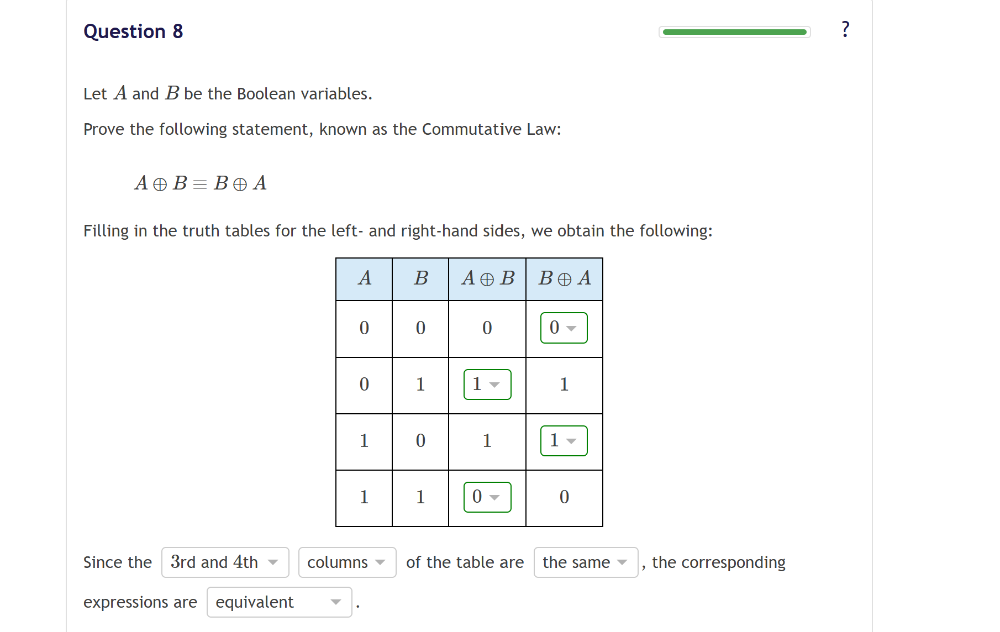

- 定期总结/ 生存报告
- 每日碎碎念
- 9.13
- 今天终于学到心心念念的图论
- 图论对我几乎是全新模块，充满新鲜感和吸引力
- 一上来学第二个 topic 时就出现 Didn't pass
- 表现为 get topic 学习失败，需要被滞后
- 需要先学一些前置 topic、该主题以及一些平行的 topics
- 在传统设计范式下，我肯定立刻感到 discouraged
- 在当前范式下，我完全无压
- Didn't pass 的瞬间仍有一点负反馈
- 但整体上几乎完全无压
- 我不会因此否定自己
- 原因判断
- 这个 topic 一下子引入了过多的新 definition
- 我短时间内没有快速适应
- 后续计划
- 先做 Graph theory 主题下其他 topics
- 提升整体 math maturity
- 再回来做，肯定能有效做掉
- 一些注定重复的思考（不建议花时间看）
- Call Out在这里只是基于 incrementalism 的理念进行的自然而然的记录
- 目前它只是一个将大脑中的涌出的思考理顺，录入成为文本的过程
- 这些目前无意义的文本，积累若干时长后，有没有可能形成一些有价值的专题文章，尚不得而知
- 异或，合取符号的选用
- 之前学 OI 时，异或一直用的是指数符号，有点像合取符号
- 现在学离散数学，改用真实的异或符号，即加法号外加一个圈
- 符号的选取很有趣
- 异或很多时候可以当作加法来理解
- 在一些式子上，它的运算律跟加法高度相似
- 按二进制理解时，异或就是只有 0 和 1 两个元素的域上的加法
- 也就是模 2 意义上的加法
- 这样一下子就能记住异或的规则，比判断相同还是不同容易多了
- 生成函数直接套用多项式展开即可
- 泛化的观点
- 今天突然进一步理解了生成函数
- 其实早就见过生成函数，不需要从标准定义引入
- 只需要看多项式展开的公式
- 不再只取正整数，允许取负数、分数、有理数
- 于是豁然开朗
- 之前多项式展开后仍是有限式子，原因是碰到了 0
- 例子中后续都有 0
- 从正数不断下降，步长为 1，自然会碰到 0
- 如果初始位置不是整数，按步长 1 下降就不会碰到 0
- 如果初始就是负数，更不会碰到 0
- 不会碰到 0，后面的项就不会消失
- 因此会有无穷多个项
- 一个有限的代数式展开成无穷项，其实很容易接受
- 认知科学相关
- Call Out依旧由于Maslow's Hammer，日常学习中总会联想到些与认知科学相关的 idea
- 证明题的训练依旧困难

- 主动反馈与信号反馈